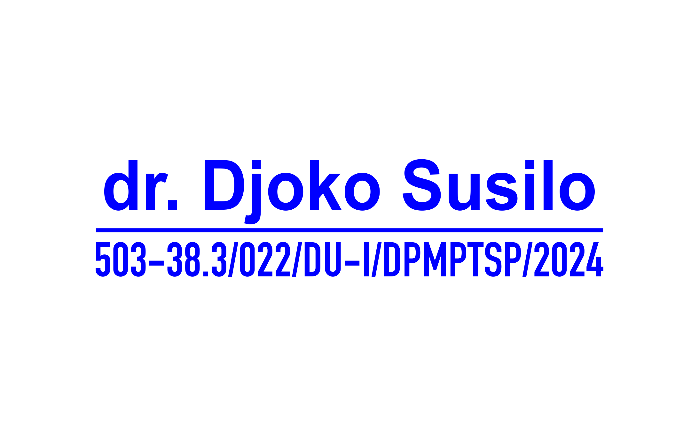
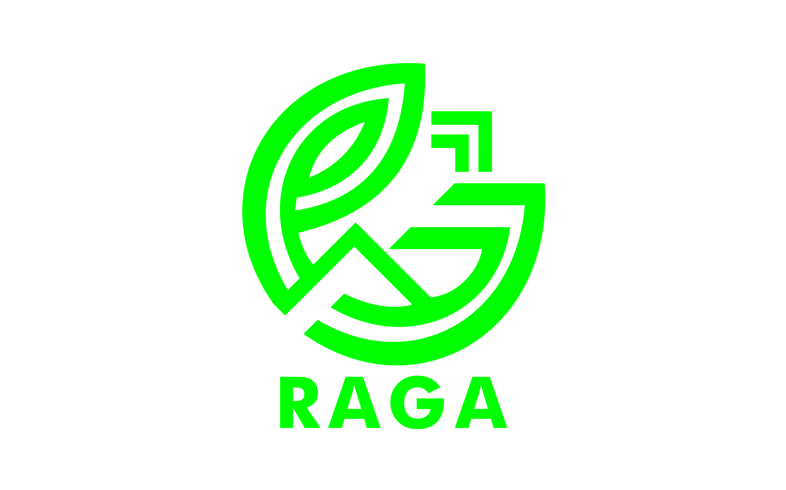
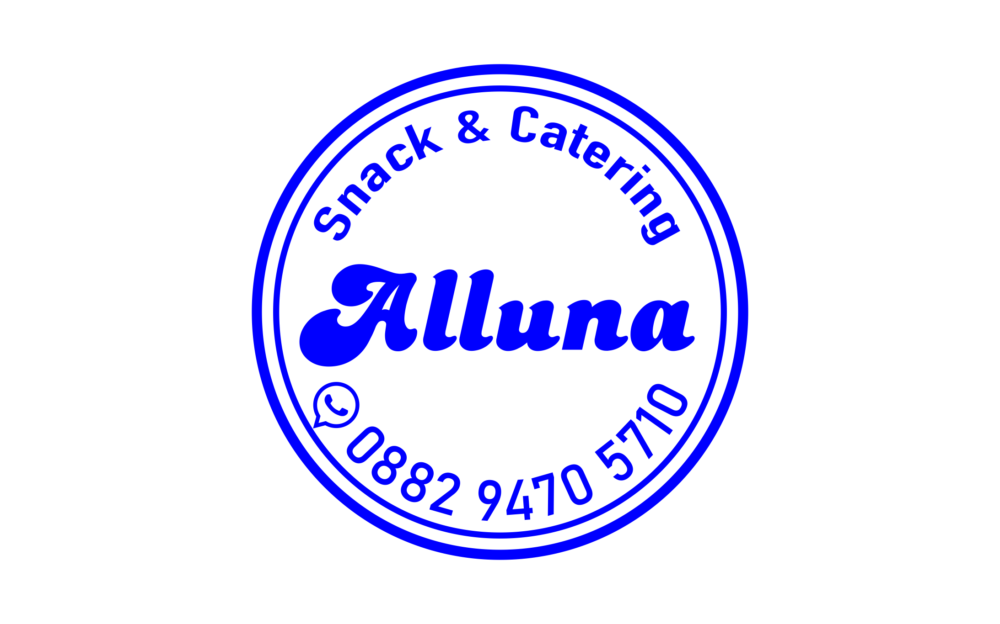
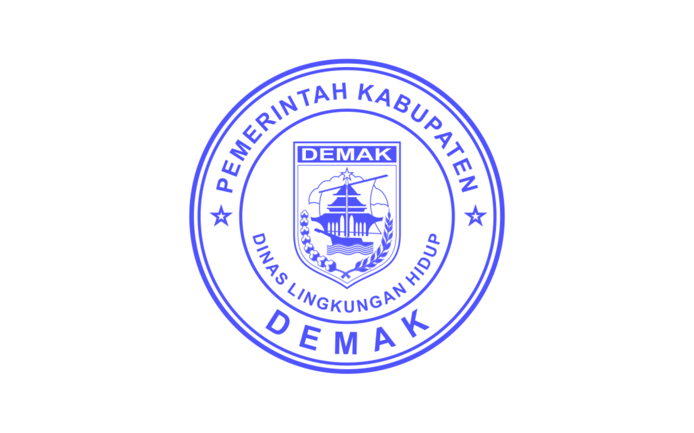
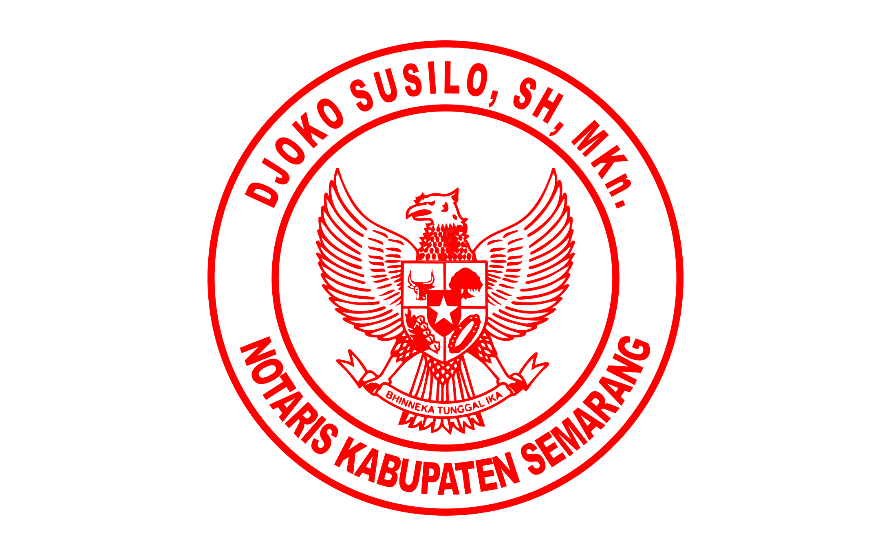

Berikut beberapa contoh desain stempel yang sering digunakan oleh toko, perusahaan, UMKM dan instansi di Ungaran Kabupaten Semarang. Desain stempel dapat disesuaikan dengan kebutuhan usaha maupun dokumen resmi.





Kami melayani pembuatan berbagai jenis stempel seperti stempel toko, stempel perusahaan, stempel UMKM, stempel instansi hingga stempel notaris di wilayah Ungaran dan Kabupaten Semarang. Stempel dibuat menggunakan teknologi **stempel flash** sehingga menghasilkan cap yang tajam, rapi dan tahan lama.
Jika Anda membutuhkan stempel untuk usaha atau perusahaan, silakan hubungi kami melalui WhatsApp untuk pemesanan.
Pesan Stempel via WhatsApp